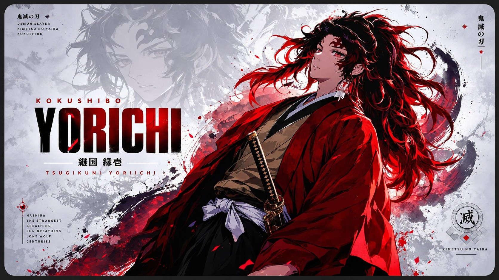
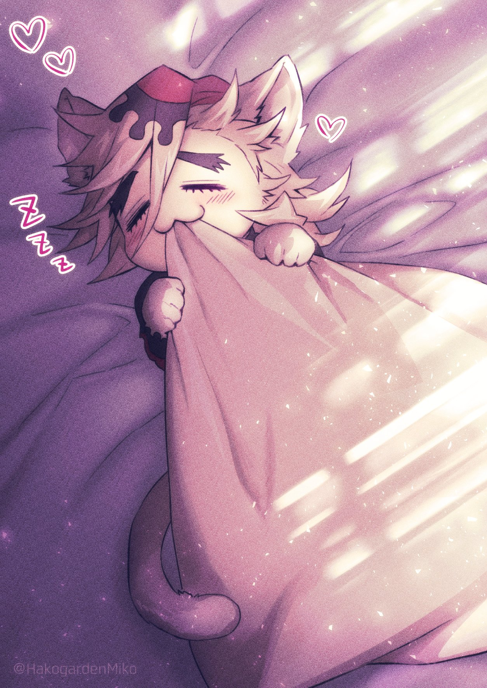
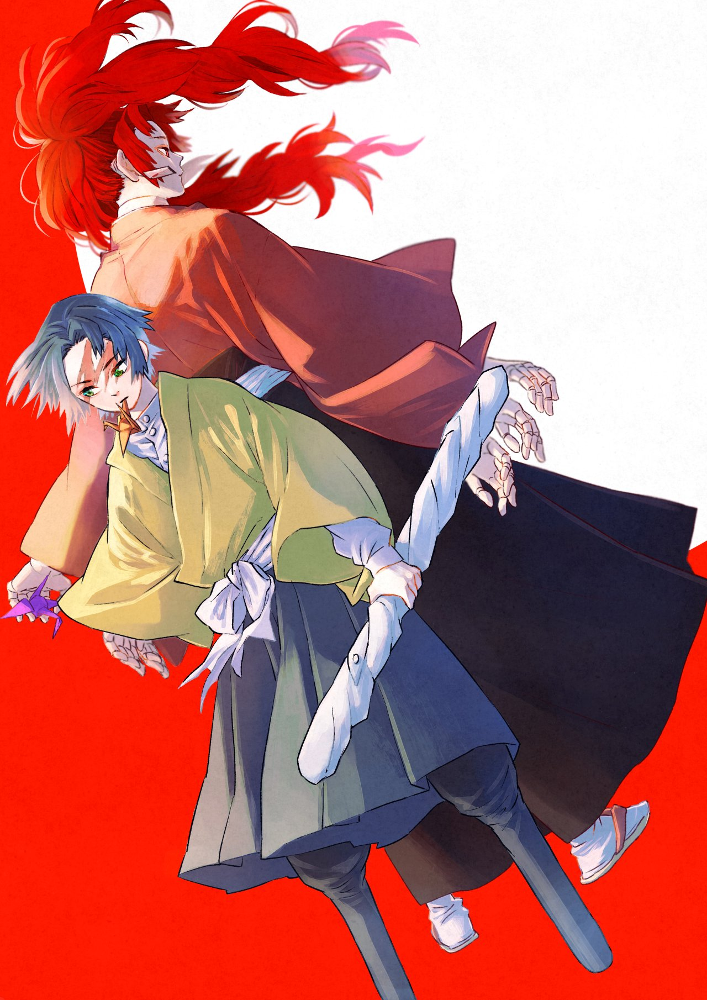
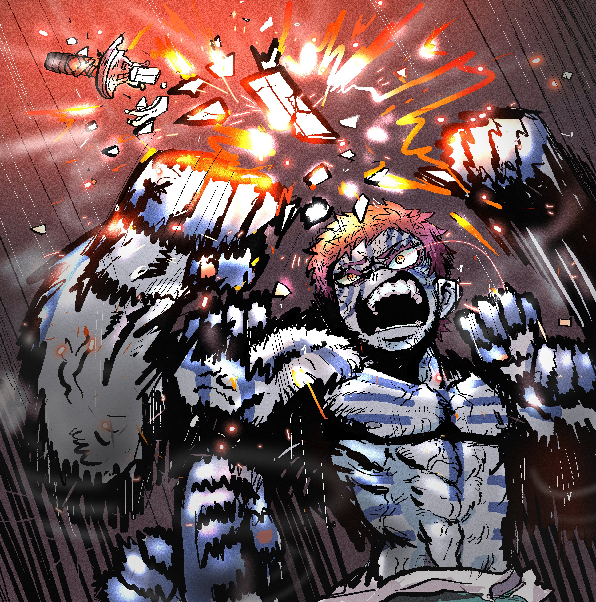
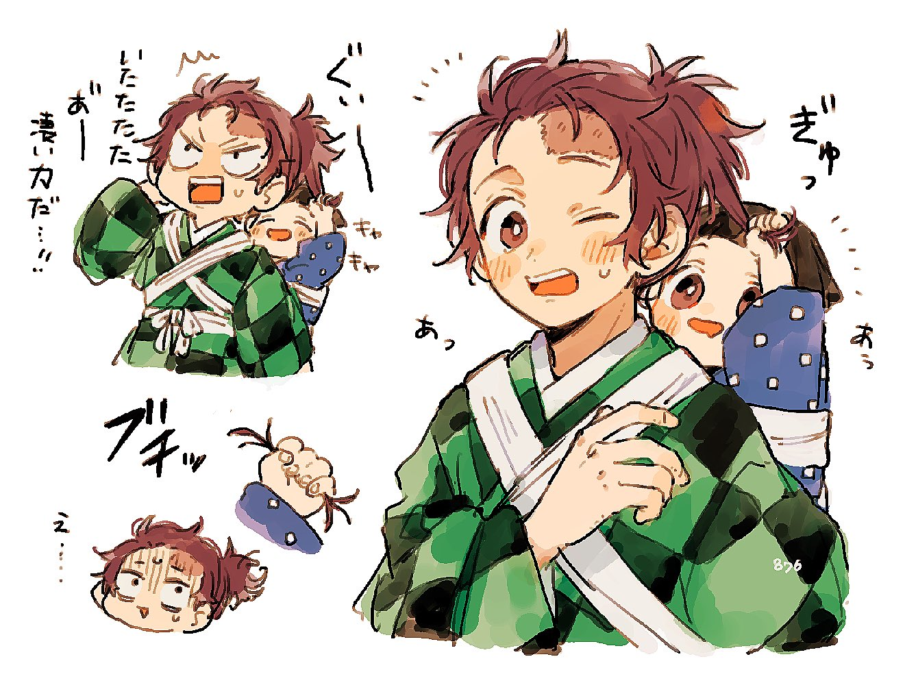
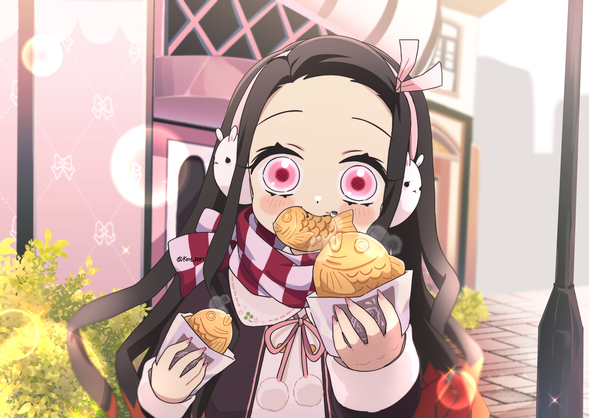
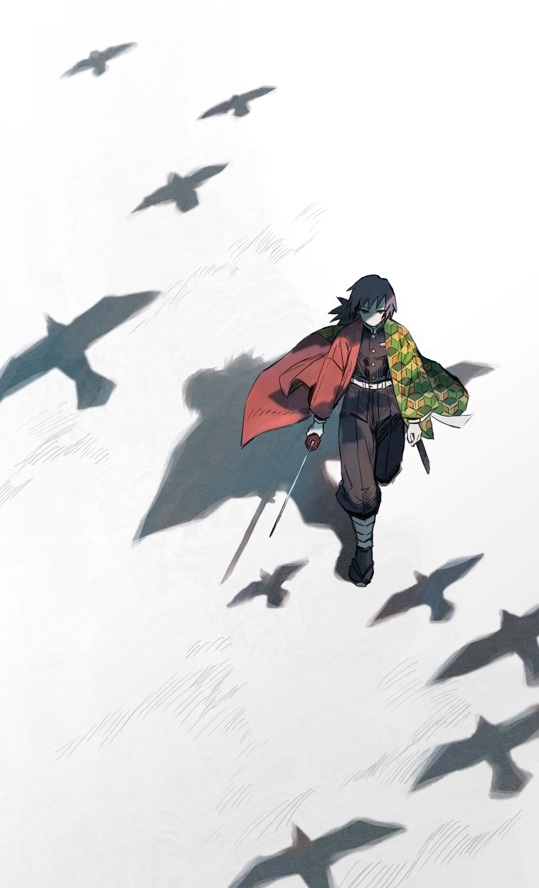
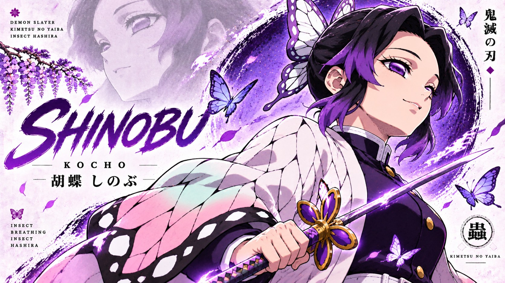
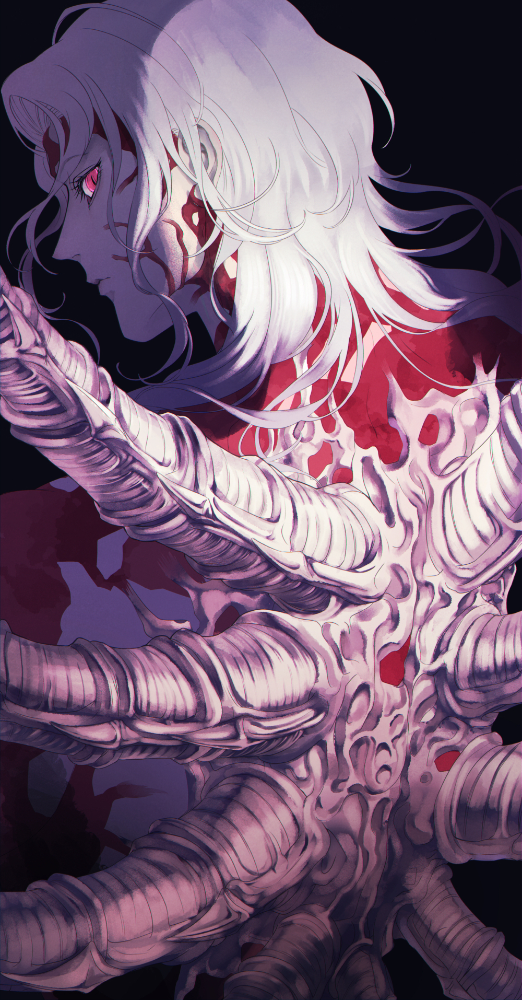

REEL 01
CINEMATIC ARCHIVE · STUDIO EDITION
THE BLADE THAT
SEVERS DESPAIR
Between the high blooming valleys of wisteria and the boundless demon-haunted twilight, warriors draw their nichirin blades. An elegant chronicle honoring the Hashira, the Twelve Kizuki, and the wills that burn hotter than the dawn.
“No matter how devastating the blows may be, you have no choice but to go on living. Set your heart ablaze and pierce through the darkest night.”
MOTION CHRONICLES · 映像記録
CINEMATIC REELS
High-definition motion showcases capturing the fluid intensity, breathing forms, and lethal elegance of the demon universe.
REEL 02
CHARACTER PROFILES · 登場人物
LEGENDS & WARRIORS
Profiles of the central figures shaping the century-long war between humanity and demons.

UPPER RANK ONE
黒死牟
Moon Breathing (月の呼吸)
Kokushibo
Leader of the Twelve Kizuki · Former Sengoku Swordsman
Formerly Michikatsu Tsugikuni, an elite Sengoku swordsman and twin brother of Yoriichi. Consumed by envy of his brother’s peerless genius, he abandoned his humanity to forge Moon Breathing with a living flesh blade.
“The path of the warrior is fraught with sacrifices. In my eternal pursuit to surpass him, I discarded everything—my humanity, my kin, my very soul.”

UPPER RANK TWO
童磨
Cryokinesis (粉凍り)
Douma
Leader of the Eternal Paradise Faith · Twelve Kizuki
Serene, friendly, and completely devoid of human grief or fear. He views devouring mortals as a divine act of mercy, sparing them from the pain of mortal life through his freezing lotus Blood Demon Art.
“Humans are so tragic. You cry, you suffer, you struggle against death. But fear not—inside my body, there is no pain, no hunger, only eternal bliss.”

SUN PROGENITOR
継国 縁壱
Sun Breathing (日の呼吸)
Yoriichi Tsugikuni
Progenitor of All Breathing Forms · Sengoku Demon Slayer
The peerless master who almost destroyed Muzan Kibutsuji in a single engagement. Born with the Demon Slayer Mark and the Transparent World, he remained profoundly humble and gentle throughout his sorrowful life.
“We are not that great. We are just fragments in the grand river of human history. The swordsmen who will surpass us are probably being born right now.”
FLAME HASHIRA
煉獄 杏寿郎
Flame Breathing (炎の呼吸)
Kyojuro Rengoku
Flame Pillar of the Demon Slayer Corps
A charismatic, righteous warrior whose burning heart inspired everyone around him. Guided by his mother's principle that the strong exist to protect the weak, he gave his life on the Mugen Train so no passenger would perish.
“Set your heart ablaze. Go beyond your limits! I will fulfill my duty! I will not allow anyone here to die!”

UPPER RANK THREE
猗窩座
Destructive Death (破壊殺)
Akaza
Martial Arts Specialist · Twelve Kizuki
Formerly the human martial artist Hakuji. Obsessed with reaching absolute combat perfection, he fights with shockwave-infused martial strikes while strictly refusing to consume or harm women.
“Become a demon, Kyojuro! If you don't, you will age and wither. Refine your martial arts for centuries to come!”

DEMON SLAYER
竈門 炭治郎
Hinokami Kagura & Water
Tanjiro Kamado
Heir to the Dance of the Fire God
A kind-hearted boy with an extraordinary sense of smell who embarked on a relentless journey to cure his sister Nezuko and end Muzan’s reign, carrying the ancestral Hanafuda earrings.
“No matter how many people you lose, you have no choice but to go on living. No matter how devastating the blows may be.”

SUNLIT DEMON
竈門 禰豆子
Exploding Blood (爆血)
Nezuko Kamado
Sun-Conquering Demon Maiden · Human Protector
Transformed into a demon by Muzan, she refused to harm humans and draws strength from deep slumber. Her pink pyrokinesis incinerates demons and purifies demon toxins.
“Humans are meant to be protected and saved... I will never hurt them!”

WATER HASHIRA
冨岡 義勇
Water Breathing: 11th Form Dead Calm
Giyu Tomioka
Water Pillar of the Demon Slayer Corps
The stoic Water Hashira who spared Tanjiro and Nezuko. Marked by survivor's guilt from the Final Selection, he invented the transcendent 11th form "Dead Calm" that neutralizes all incoming attacks.
“Feel the rage. That unforgiving anger will become your unyielding drive to take action and strike back!”

INSECT HASHIRA
胡蝶 しのぶ
Insect Breathing (蟲の呼吸)
Shinobu Kocho
Insect Pillar · Mistress of Butterfly Mansion
A genius apothecary who compensates for lacking the physical strength to decapitate demons with blinding thrusting velocity and lethal wisteria poison injected via her stinger blade.
“Even without the physical strength to decapitate demons, the wisteria poison in my stinger blade is absolute.”

DEMON PROGENITOR
鬼舞辻 無惨
Biokinesis & Blood Curse
Muzan Kibutsuji
The Demon King · Progenitor of All Demons
A thousand-year-old progenitor whose singular ambition is absolute physical perfection and conquering the sun. Cold and tyrannical, he rules the Twelve Kizuki through absolute telepathic dominance.
“I am a living catastrophe. Does a natural disaster apologize to the trees it uproots? Survival alone should suffice.”
MEMORABLE INSCRIBED WORDS · 魂の言霊
WORDS THAT BURNED THROUGH TWILIGHT
“
Set your heart ablaze. Go beyond your limits! I will fulfill my duty! I will not allow anyone here to die!
Kyojuro Rengoku
The Flame Hashira · 炎柱
“
You cannot even touch the sky with your hand, yet you wish to seize the stars? Even if our lives are fragile and fleeting, the fire of human will shall never be extinguished.
Yoriichi Tsugikuni
Sun Breathing Progenitor · 日の呼吸開祖
“
Humans are so tragic. You cry, you suffer, you struggle against death. But fear not—inside my body, there is no pain, no hunger, only eternal bliss.
Douma
Upper Rank Two · 十二鬼月